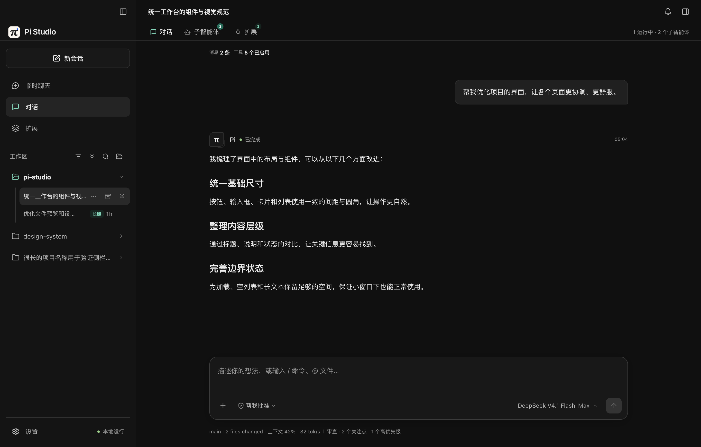

持久化会话
普通对话、长期任务与 owned child conversations 共用 Durable 执行引擎；流式事件、工具轨迹、中断、分页和分叉保持一致。
一个本地优先的桌面 Agent 工作台。把持久会话、长期任务、子智能体、编码 Harness、模型与扩展组织成一条可以检查、复用和继续扩展的工作流。
(Pi Durable · Local first · 2026)
Pi Studio 不是一个聊天窗口。
它把 Pi Durable 的持久化 Agent 能力搬进桌面——会话、长期任务与子 Agent
都留在本地；编码 Prompt、工具说明、项目指令与偏好都可以被检查。
Studio 负责桌面体验、数据与编码 Harness；Pi Durable 负责会话、任务和流式执行。两者边界明确，配置无需依赖 Pi CLI。
普通对话、长期任务与 owned child conversations 共用 Durable 执行引擎；流式事件、工具轨迹、中断、分页和分叉保持一致。
在项目工作区之间切换，或打开使用 MemoryStorage 的临时聊天。临时会话支持文字与图片，退出后不留下对话或附件记录。
Studio SQLite 独立保存来源、密钥、模型发现、上下文、输出上限、图片与 thinking 能力；当前会话可热切换，下一次请求生效。
八个可开关的 Prompt 部分，加上逐工具 guidance、AGENTS.md、Skill 与自定义补充；profile 可按工作区覆盖，独立工具调用可并行执行。
Agent 扩展向 Durable 提供 tools、sections、hooks 与 tasks；MCP 默认按需搜索，密钥保存在加密 envelope；Skill 只注入元数据并按需读取正文，同时兼容通用 .agents/skills。项目资源使用显式信任与内容指纹。资源与信任 · 扩展系统 · 声明式 UI · 安装与发布 ↗
按回合汇总改动，展开文件级 diff，支持自动布局、换行、文件跳转、独立标签与可调宽侧栏。
子 Agent 使用独立 Durable conversation、模型与上下文；可以从主 Agent 进入子会话查看 transcript，再返回原来的主对话。
四套全局强调色、亮暗外观、图片 / 动态图片 / 视频背景，以及可驻留菜单栏的运行状态、完成通知与 Release 更新。
配置在下一请求边界热刷新；流式更新按帧合并、历史自动分页，并为详情、文件、子 Agent 与工具目录设置缓存上限。
文档不再只是功能清单。它覆盖安装与工作区、模型与 thinking、Harness 与权限、Skill / MCP / 扩展、子智能体与长期任务，再进入 Durable Runtime、SQLite、热加载和安全边界。
扩展作者可以直接找到 Manifest、Tool、Command、声明式 UI、签名、Registry、安装与回滚；贡献者可以找到目录结构、开发命令、QA 和发布流程。
打开工作区，选择 Harness，交给 Durable 执行，再在同一窗口里审阅工具调用与文件差异。
选择工作区中的普通对话、长期任务，或打开不落盘的临时聊天。
选择编码 profile；Studio 组织 Prompt、AGENTS.md、Skill、工具与当前工作目录。
自然语言、/ 命令、@ 文件与附件交给 Durable；工具调用、代码 diff 与思考过程实时展开。
文件预览与变更摘要留在会话里，回滚或继续都有据可查。
从欢迎页、会话、子智能体，到 Harness、模型、权限与使用量。所有截图均为 2×，点击可放大。
DMG 由 GitHub Actions 在 macOS 上自动构建，Apple Silicon 与 Intel 各一份。v0.0.5 修复了后台任务仍运行时过早结束会话的问题，请从 latest Release 下载对应架构。
应用未签名，首次打开若提示「无法验证开发者」，在终端执行
xattr -cr "/Applications/Pi Studio.app"，
或右键点击应用 →「打开」→ 再点「打开」。
需要 Node.js ≥ 22.19 与 pnpm。克隆仓库后按顺序执行即可。
pnpm install安装依赖pnpm devVite + Electron 热更新pnpm testNode 契约 / Harness / 扩展 / 任务测试pnpm run build && pnpm start生产模式运行pnpm dist打包 arm64 + x64 DMG